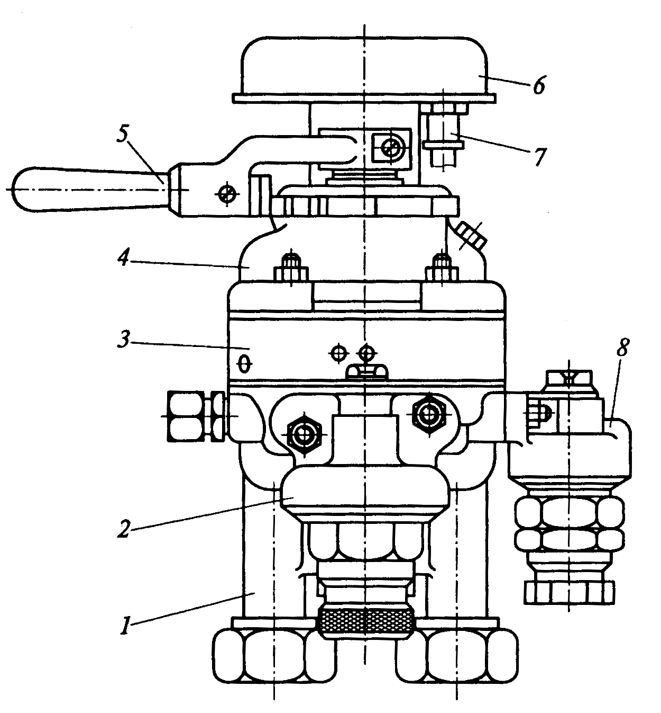
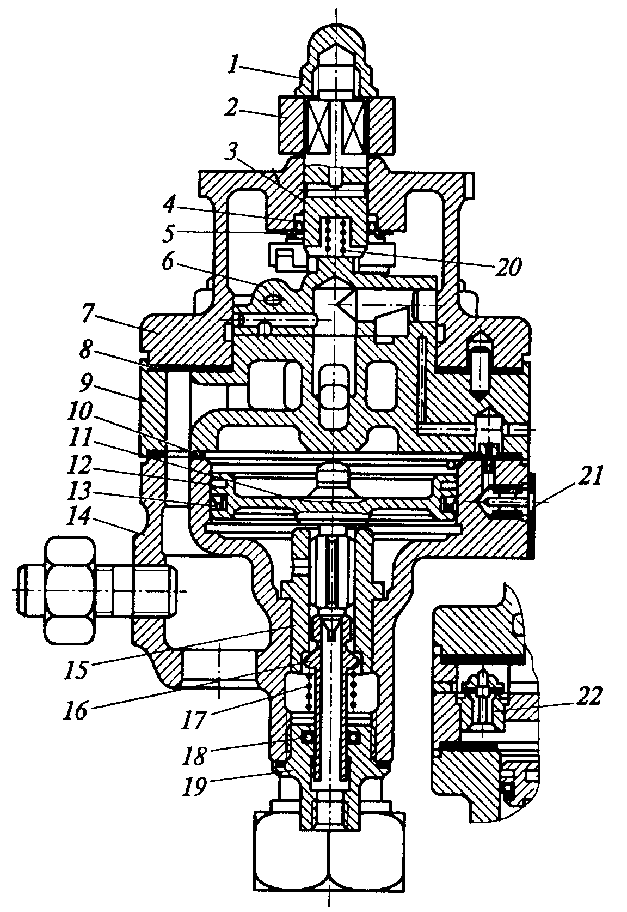
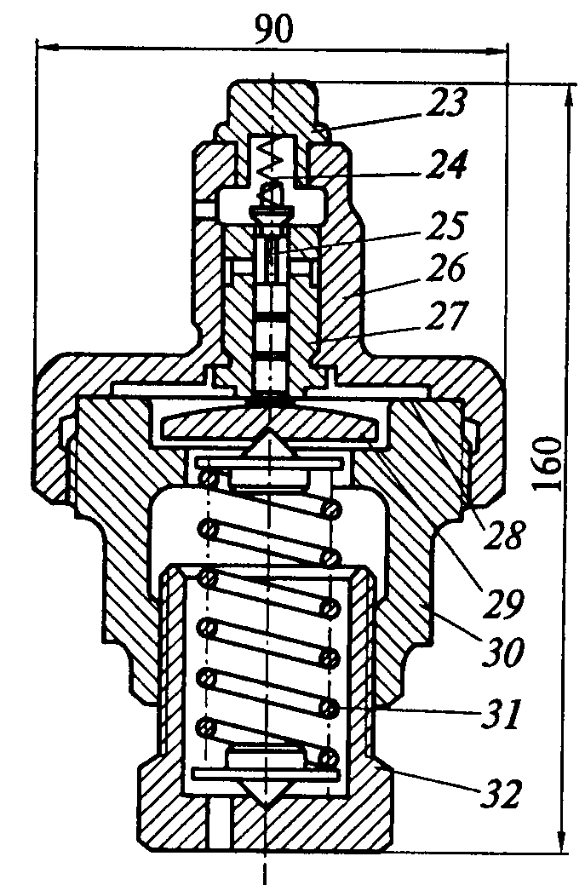
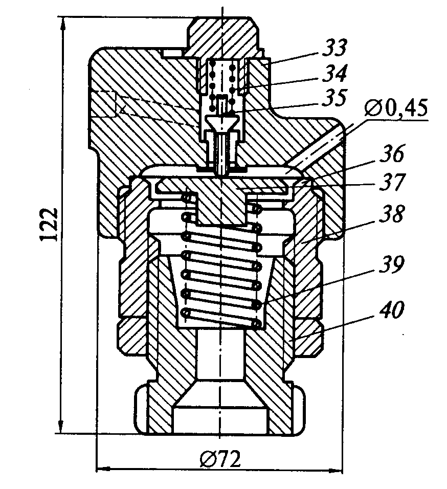
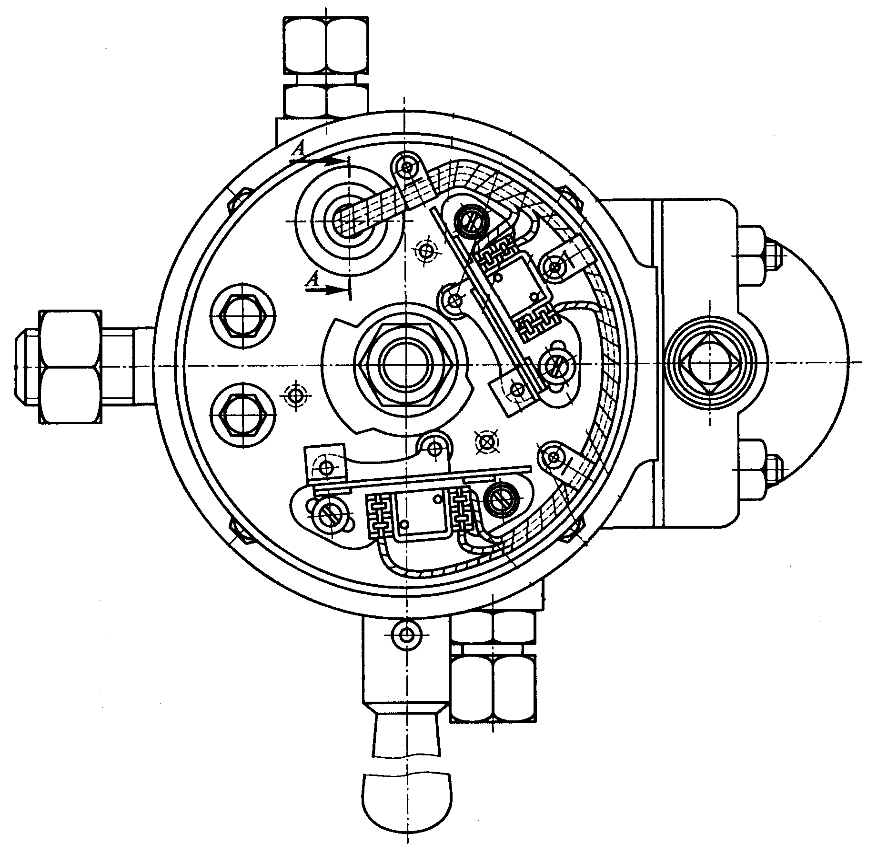

Поездной кран машиниста усл.№395М служит для управления пневматическими тормозами поезда; с его помощью производится зарядка тормозной магистрали, поддержание в ней определенного давления и выпуск воздуха в атмосферу при торможении.
Применяется для управления автоматическими и электропневматическими тормозами грузовых и грузопассажирских поездов с функцией дистанционного управления автоматическим тормозом и возможностью включения песочниц и отключения режима тяги локомотива при экстренном торможении.
К конструкции поездного крана машиниста усл.№395М предъявляются следующие технические требования:
Поездной кран состоит из пяти пневматических частей: корпуса нижней части 1, редуктора зарядного давления 2, средней части 3, крышки 4, стабилизатора темпа ликвидации сверхзарядного давления 8 и электрического контроллера 6.
В верхней части крана имеется золотник 6, соединенный стержнем 3 с ручкой 2 крана. Ручка крана закреплена контргайкой 1 и имеет на крышке 7 верхней части семь фиксированных положений. Стержень уплотнен в верхней части крышки манжетой 4.
В нижней части корпуса 14 находятся пустотелый впускной клапан 16 и уравнительный поршень 11, хвостовик которого образует выпускной клапан. Уравнительный поршень уплотнен резиновой манжетой 13 и латунным кольцом 12. Впускной клапан прижимается к седлу 15 пружиной 17. Хвостовик впускного клапана уплотнен резиновой манжетой 18, установленной в цоколе 19.
В нижнюю часть корпуса ввернуты четыре шпильки, которые скрепляют все три части крана через резиновые прокладки 8 и 10, а также сетчатый фильтр 21.
Редуктор зарядного давления и стабилизатор темпа ликвидации сверхзарядного давления крепятся к корпусу нижней части крана.
Редуктор предназначен для автоматического поддержания определенного зарядного давления в уравнительном объеме крана при поездном положении ручки. Редуктор состоит из двух частей: верхней — крышки 26 и нижней — корпуса 30, между которыми зажата металлическая диафрагма 28. В верхней части корпуса расположено седло 27 питательного клапана 25, пружина 24 и заглушка 23. В нижнюю часть ввернут регулировочный стакан 32, с помощью которого изменяется усилие регулировочной пружины 31 на опорную шайбу 29.
Стабилизатор предназначен для автоматической ликвидации сверхзарядного давления из уравнительного объема крана постоянным темпом при поездном положении ручки. Стабилизатор состоит из крышки 33 с калиброванным отверстием диаметром 0,45 мм, возбудительного клапана 35 с пружиной 34, металлической диафрагмы 36, пластмассовой упорной шайбы 37, корпуса 38, регулировочной пружины 39 и регулировочного стакана 40 с контргайкой.
Особенностью поездного крана машиниста усл.№395М всех модификаций является наличие контроллера, который в кранах № 395-000, 395-000-4 и 395-000-5 служит для одновременного управления пневматическими и электропневматическими тормозами. В кране усл.№395-000-4 контроллер помимо управления электропневматическими тормозами служит для выключения тяговых двигателей и включения пневматической песочницы при экстренном торможении, а в кране № 395-000-3 — только для выключения тяговых двигателей и включения песочницы при экстренном торможении.
Конструкции контроллеров поездных кранов машиниста усл.№395 отличаются числом микропереключателей, их расположением, числом проводов и типом штепсельного разъема. На кранах № 395-000-3 наружный диаметр контроллера меньше, чем на кранах других модификаций.
Краны машиниста № 395-000 с двумя микропереключателями и № 395-000-4 с тремя применяются на пассажирских локомотивах. Кран машиниста № 395-000-5 с двумя микропереключателями, включенными по схеме, отличной от схемы крана № 395-000, применяется на электро- и дизель-поездах, а кран машиниста № 395-000-3 с одним микропереключателем - на грузовых локомотивах.
